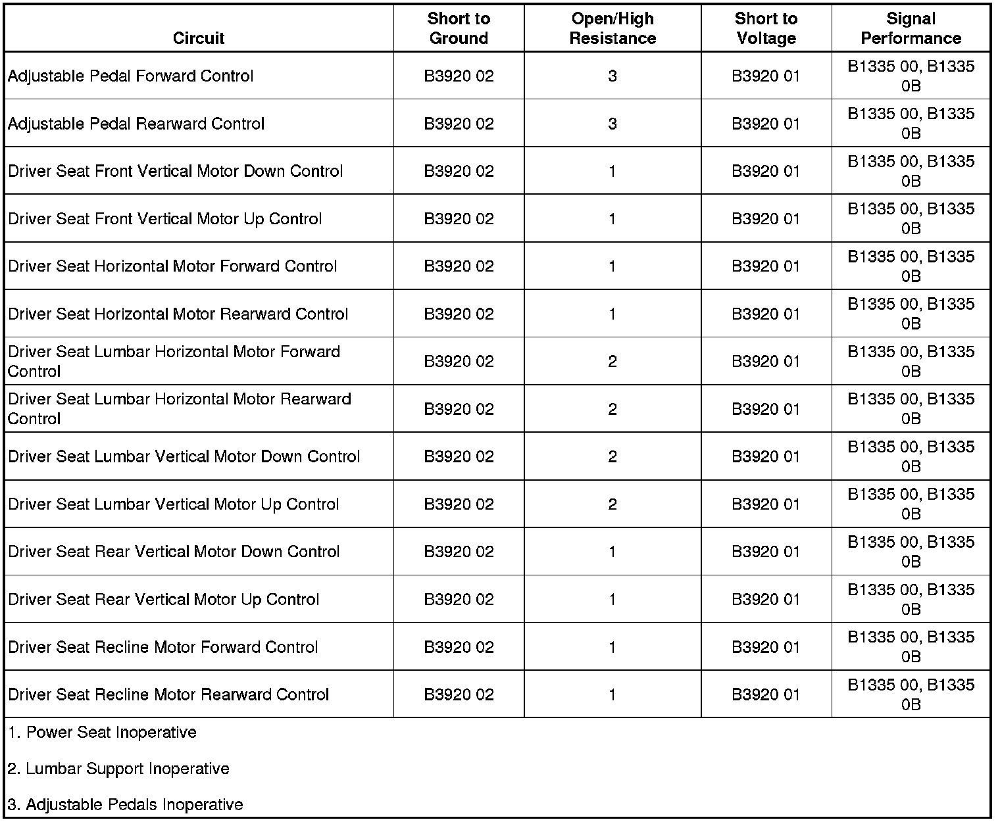

B1335
DTC B1335
Diagnostic Instructions
* Perform the Diagnostic System Check - Vehicle (Initial Inspection and Diagnostic Overview) prior to using this diagnostic procedure.
* Review Strategy Based Diagnosis (Initial Inspection and Diagnostic Overview) for an overview of the diagnostic approach.
* Diagnostic Procedure Instructions (Initial Inspection and Diagnostic Overview) provides an overview of each diagnostic category.
DTC Descriptors
DTC B1335 00
- Power Rail 1 Motors Short to Battery/Short to Ground
DTC B1335 0B
- Power Rail 1 Motors Current Above Threshold
DTC B1335 42
- Power Rail 1 Current Sensing Calibration Data Not Present
DTC B1335 4B
- Power Rail 1 Current Sensing Calibration Data Out of Range
Diagnostic Fault Information

Circuit/System Description
The memory seat module (MSM) monitors the current supplied to the driver seat adjuster motors, recline motor, lumbar motor, and the adjustable pedal motor. It can detect both absolute and differential current levels from the motors. Absolute current is the maximum allowable current the module will supply to the motors. A differential current mismatch occurs when the current supplied to the motors does not match the current returning from the motors.
Conditions for Running the DTC
The motors must be active.
Conditions for Setting the DTC
B1335 00
Current out of the module does not match the current returning to the module from 1.5-5 A.
B1335 0B
The differential current measured through the high and low side of the power rail is within tolerance of each other, but the absolute current or an over-current has exceeded the maximum value.
B1335 42
This DTC will set if the module calibration is not programmed.
B1335 4B
This DTC will set if the module calibration is out of range.
Action Taken When the DTC Sets
All movement related to the seat, recline, lumbar, adjustable pedals motors is aborted.
Conditions for Clearing the DTC
* The current DTC will clear and set the code to history, 3 seconds after no motor movement is requested or the current is no longer mismatched, and the ignition is cycled OFF then back to ACC or RUN.
* The history DTC will clear after 50 consecutive fault-free ignition cycles have occurred.
Reference Information
Schematic Reference
Driver Seat Schematics (Driver Seat Schematics)
Adjustable Pedal Schematics ([1][2]Electrical Diagrams)
Connector End View Reference
Component Connector End Views (Connector Views)
Description and Operation
Memory Seats Description and Operation (Memory Seats Description and Operation)
Electrical Information Reference
* Circuit Testing (Component Tests and General Diagnostics)
* Connector Repairs (Component Tests and General Diagnostics)
* Testing for Intermittent Conditions and Poor Connections (Component Tests and General Diagnostics)
* Wiring Repairs (Component Tests and General Diagnostics)
Scan Tool Reference
Control Module References (Programming and Relearning)
Circuit/System Testing
B1335 00 or B1335 0B
1. Use a scan tool to clear the current and history diagnostic trouble code.
2. Ignition ON, determine which motor set this DTC by operating the following motors one at a time in both directions. Check for the DTC to set between each motor test.
* Driver seat front vertical motor
* Driver seat rear vertical motor
* Driver seat horizontal motor
* Driver seat recline motor
* Driver seat lumbar horizontal motor
* Adjustable Pedal Motor
3. With a scan tool, clear the current and history diagnostic trouble code.
4. Ignition OFF, disconnect the harness connector at the motor for which the DTC set.
5. Ignition ON, operate the motor in both directions then verify that the DTC sets.
• If the DTC does not set, test or replace the motor.
6. Ignition OFF, disconnect the appropriate harness connector at the MSM.
7. Ignition ON, test for 0 volts between each motor control circuit and ground.
• If greater than the specified value, test the control circuit for a short to voltage.
8. Ignition OFF, test for infinite resistance between each motor control circuit and ground.
• If less than the specified value, test the control circuit for a short to ground.
9. Test for infinite resistance between the motor control circuits.
• If less than the specified value, test for a short between the control circuits.
10. If all circuits test normal, replace the MSM.
B1335 42 or B1335 4B
If either DTC is set, replace the MSM.
Repair Instructions
Perform the Diagnostic Repair Verification (Verification Tests) after completing the diagnostic procedure.
* Seat Adjuster Motor Replacement - Horizontal (Seat Adjuster Motor Replacement - Horizontal)
* Seat Adjuster Motor Replacement - Vertical (Seat Adjuster Motor Replacement - Vertical)
* Front Seat Recliner Actuator Motor Replacement (Front Seat Recliner Actuator Motor Replacement)
* Front Seat Lumbar Support Replacement (Front Seat Lumbar Support Replacement)
* Control Module References (Programming and Relearning) for MSM replacement, setup, and programming